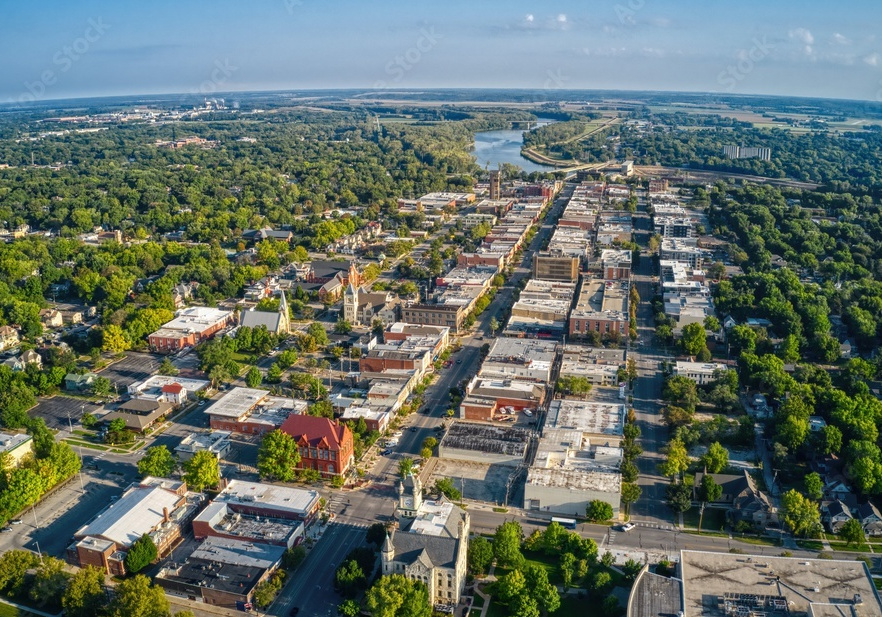

Lawrence

Lawrence is home to The University of Kansas. A school well known for it's basketball team that was originally coached by the inventor of Basketball. They also happen to be very good. Massachussetts Street which is our main downtown corridor. most folks shorten it to Mass Street (Fun Fact: I couldn't say the word Massachusetts until I was 16).